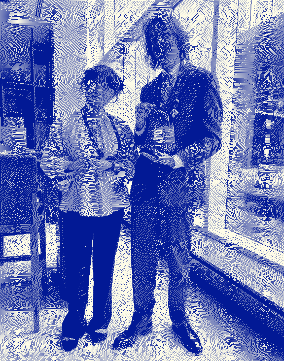
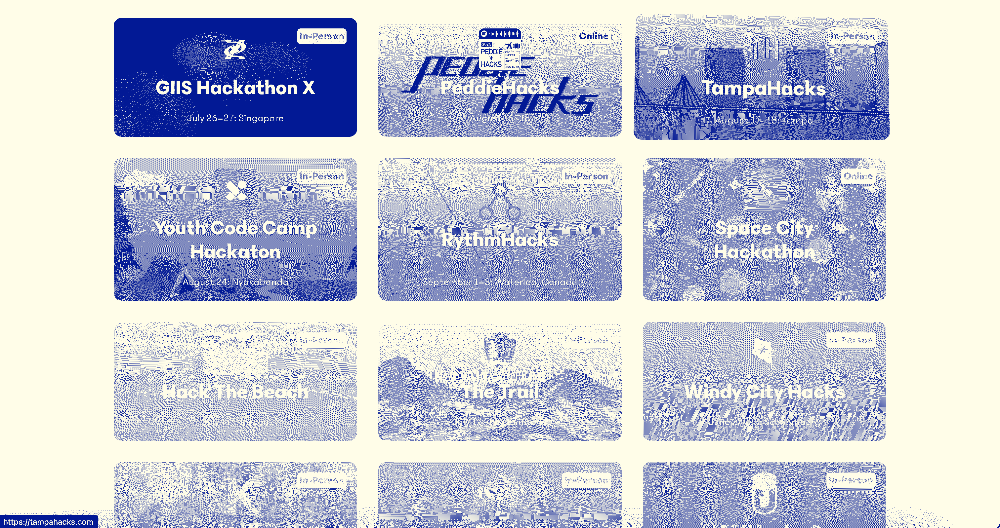

Journeys @
(2023-2024)
Home / How-I-Discovered-Hack-Club
In high school, I did not know many people into coding / design. I thought I may be the only teenager who builds projects for fun.
This was until I joined FBLA and competed in UI/UX design where I got the chance to go to nationals in Chicago. While waiting in line for the competition, I met other teenagers who were also into UI/UX design & coding websites. This was my first time meeting other teens who code!

here's a photo that Clara (my new friend who I met in line) & I took at FBLA. You can see they made us wear suits! Lame!
We decided while waiting in line that after the competition, we were going to meet up, and so we did. Clara suggested that we do a hackathon, to which I responded: "what's a hackathon?" She pulled out her laptop and showed me an awesome looking website full of cool upcoming hackathons. [ hackathons.hackclub.com ]
Most were in California, but there were 2-3 that were online! We continued to talk at FBLA, become great friends, and play many games of chess, and then a couple weeks later, we competed in my first hackathon & my best friend Dieter joined our team. The project we built was called Giving Giraffe:
Here's the link to try out the site if you'd like to try it: https://giving-giraffe.vercel.app/
I then went back to hackathons.hackclub.com to try to find more hackathons and unfortunately, I could not find any. I then clicked on the Hack Club flag in the top right corner, and started exploring the main Hack Club site. The site did not make sense to me at the time, so I googled: "who founded Hack Club?".
I then got a result of... "Zach Latta", so I proceeded to google: "Zach Latta Podcast" & arrived at a podcast Zach Latta did with The American Optimist.
I listened to the 30 minute podcast late that evening, and then immediately after listening decided: "I NEED TO START A HACK CLUB AT MY HIGH SCHOOL". I felt like there was no space for people who liked making things at my school, and this seemed like the way I could make my school much better and create a culture of making! After covid, the clubs at my school (mainly Student Council) shifted from being about helping people to mostly fundraising through selling donuts & chicken sandwiches & throwing parties (I'm vegan & also not good at parties, so you can see why this shift left me feeling w/o a community at my HS).
Starting a Hack Club also seemed like a way that I could make friends who also enjoyed tinkering with computers. I decided that if I did not do it, nobody would. I also decided that instead of disliking the way things were done at my school in the clubs I was part of that I did not have control over, I should create something new that I think is great & aligns with the world I want to live in.
The next day I pitched to my best friend Dieter on episode 44 of our podcast that we should start a Hack Club at our high school. I'll continue from here on the next post... see you there :)